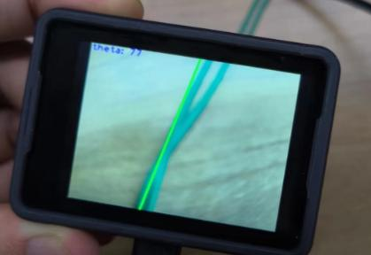

English
EnglishMaixCAM MaixPy Line Tracking
Update history
| Date | Version | Author | Update content |
|---|---|---|---|
| 2024-05-09 | 1.0.0 | lxowalle | Initial document |
Before reading this article, make sure you already know how to develop MaixCAM. For details, please read Quick Start.
Introduction
In vision applications, the function of tracking line is often required in applications such as line-following robot. In this article, we will describe:
How to use MaixPy to tracking line.
How to tracking line using MaixCam's default application
How to use MaixPy to tracking line
The maix.image.Image module in MaixPy provides the get_regression method, which can conveniently tracking line.
Code example
A simple example of finding and drawing a line.
from maix import camera, display, image
cam = camera.Camera(320, 240)
disp = display.Display()
# thresholds = [[0, 80, 40, 80, 10, 80]] # red
thresholds = [[0, 80, -120, -10, 0, 30]] # green
# thresholds = [[0, 80, 30, 100, -120, -60]] # blue
while 1:
img = cam.read()
lines = img.get_regression(thresholds, area_threshold = 100)
for a in lines:
img.draw_line(a.x1(), a.y1(), a.x2(), a.y2(), image.COLOR_GREEN, 2)
theta = a.theta()
rho = a.rho()
if theta > 90:
theta = 270 - theta
else:
theta = 90 - theta
img.draw_string(0, 0, "theta: " + str(theta) + ", rho: " + str(rho), image.COLOR_BLUE)
disp.show(img)
Steps:
import image, camera, display modules
from maix import image, camera, displayInitialize camera and display
cam = camera.Camera(320, 240) # Initialise camera, output resolution 320x240 in RGB format. disp = display.Display()Get the image from the camera and display it
while 1: img = cam.read() disp.show(img)Call the
get_regressionmethod to find the straight line in the camera image and draw it to the screenlines = img.get_regression(thresholds, area_threshold = 100) for a in lines: img.draw_line(a.x1(), a.y1(), a.x2(), a.y2(), image.COLOR_GREEN, 2) theta = a.theta() rho = a.rho() if theta > 90: theta = 270 - theta else: theta = 90 - theta img.draw_string(0, 0, "theta: " + str(theta) + ", rho: " + str(rho), image.COLOR_BLUE)imgis the camera image read viacam.read(), when initialised ascam = camera.Camera(320, 240), theimgobject is an RGB image with a resolution of 320x240.img.get_regressionis used to find straight lines,thresholdsis a list of colour thresholds, each element is a colour threshold, multiple thresholds are passed in if multiple thresholds are found at the same time, and each colour threshold has the format[L_MIN, L_MAX, A_MIN, A_MAX, B_MIN, B_MAX], whereL,A,Bare the three channels ofLABcolour space,Lchannel is the luminance,Achannel is the red-green channel,Bchannel is the blue-yellow channel.pixels_thresholdis a pixel area threshold used to filter some unwanted straight lines.for a in linesis used to iterate through the returnedLineobjects, whereais the currentLineobject. Normally theget_regressionfunction will only return oneLineobject, but if you need to find more than one line, try thefind_linemethod.- Use
img.draw_lineto draw the found line,a.x1(), a.y1(), a.x2(), a.y2()represent the coordinates of the ends of the line. - Use
img.draw_stringto show the angle between the line and the x-axis in the upper left corner, anda.theta()is the angle between the line and the y-axis, which is converted tothetafor easier understanding,a.rho()is the length of the vertical line from the origin to the line.
Run the code through the maixvision, you can find the line, look at the effect!

Common Parameter Explanations
Here are explanations of commonly used parameters. If you cannot find parameters that can implement your application, you may need to consider using other algorithms or extending the required functionality based on the current algorithm's results.
| Parameter | Description | Example |
|---|---|---|
| thresholds | Thresholds based on the LAB color space, thresholds=[[l_min, l_max, a_min, a_max, b_min, b_max]], representing: Brightness range [l_min, l_max] Green to red component range [a_min, a_max] Blue to yellow component range [b_min, b_max] Multiple thresholds can be set simultaneously |
Set two thresholds to detect red and greenimg.find_blobs(thresholds=[[0, 80, 40, 80, 10, 80], [0, 80, -120, -10, 0, 30]])Red threshold is [0, 80, 40, 80, 10, 80] Green threshold is [0, 80, -120, -10, 0, 30] |
| invert | Enable threshold inversion, when enabled, the passed thresholds are inverted. Default is False. | Enable threshold inversionimg.find_blobs(invert=True) |
| roi | Set the rectangular region for the algorithm to compute, roi=[x, y, w, h], where x and y represent the coordinates of the top-left corner of the rectangle, and w and h represent the width and height of the rectangle, respectively. The default is the entire image. | Compute the region at (50, 50) with a width and height of 100img.find_blobs(roi=[50, 50, 100, 100]) |
| area_threshold | Filter out blobs with a pixel area smaller than area_threshold, in units of pixels. The default is 10. This parameter can be used to filter out some useless small blobs. | Filter out blobs with an area smaller than 1000img.find_blobs(area_threshold=1000) |
| pixels_threshold | Filter out blobs with fewer valid pixels than pixels_threshold. The default is 10. This parameter can be used to filter out some useless small blobs. | Filter out blobs with fewer than 1000 valid pixelsimg.find_blobs(pixels_threshold=1000) |
This article introduces commonly used methods. For more APIs, please see the image section of the API documentation.
Increasing the speed of line tracking
Here are a few ways to increase the speed of line tracking
Choose a suitable resolution
The larger the resolution, the slower the calculation speed, you can choose a more suitable resolution according to the recognition distance and accuracy requirements.
Use gray scale image
When using gray scale recognition, the algorithm will only process one channel, there is a faster recognition speed, in the environment of a single color will be very useful. Note that only
l_minandl_maxare valid when passingthresholdstoget_regressionwhen using gray scale image recognition.Methods for get gray scale image:
# Example 1 cam = camera.Camera(320, 240， image.Format.FMT_GRAYSCALE) # Support after MaixPy v4.2.1 gray_img = cam.read() # get gray scale image # Example 2 cam = camera.Camera(320, 240) img = cam.read() gray_img = img.to_format(image.Format.FMT_GRAYSCALE) # get gray scale image
How to tracking line using MaixCam's default application
To quickly verify the line tracking functionality, you can use the line_tracking application provided by MaixCam to experience the line finding effect.
How to use it
- Select and open the
Line trackingapplication. - Click on the line in the screen that needs to be identified and the colour of the line will be displayed on the left hand side
- Click on the colour to be detected on the left (the colour below L A B in the screen)
- The line will be identified and the coordinates and angle of the line will be output from the serial port.
Demo
Advanced operations
Manual adjustment of LAB threshold to tracking line
The application provides manual setting of LAB threshold to tracking line accurately.
Steps:
Clicktheoptions iconin the bottom-left corner to enter configuration mode.- Point the
cameraat theobjectyou need tofind,clickon thetarget objecton the screen, and theleft sidewill display arectangular frameof the object's color and show theLAB valuesof that color. - Click on the bottom options
L Min,L Max,A Min,A Max,B Min,B Max. After clicking, a slider will appear on the right side to set the value for that option. These values correspond to the minimum and maximum values of the L, A, and B channels in the LAB color format, respectively. - Referring to the
LAB valuesof the object color calculated in step 2, adjustL Min,L Max,A Min,A Max,B Min,B Maxto appropriate values to identify the corresponding color blobs. For example, ifLAB = (20, 50, 80), sinceL=20, to accommodate a certain range, setL Min=10andL Max=30. Similarly, sinceA=50, setA Min=40andA Max=60. SinceB=80, setB Min=70andB Max=90.
Getting Detection Data via Serial Protocol
The line tracking application supports reporting detected straight line information via the serial port (default baud rate is 115200).
Since only one report message is sent, we can illustrate the content of the report message with an example.
For instance, if the report message is:
AA CA AC BB 0E 00 00 00 00 E1 09 FC 01 01 00 E9 01 6F 01 57 00 C1 C6
AA CA AC BB: Protocol header, fixed content0E 00 00 00: Data length, the total length excluding the protocol header and data length, here means the length is 14.E1: Flag bit, used to identify the serial message flag09: Command type, for the line tracking application, this value is fixed at 0x09.FC 01 01 00 E9 01 6F 01 57 00: The coordinates and angle information for both ends of line, with each value represented as a 2-byte value in little-end format.FC 01and01 00indicate that the coordinates of the first endpoint are (508, 1),E9 01and6F 01indicate that the coordinates of the second endpoint are (489, 367), and57 00indicates that the angle of the line to the x-axis is 87 degreesC1 C6: CRC checksum value, used to verify if the frame data has errors during transmission.